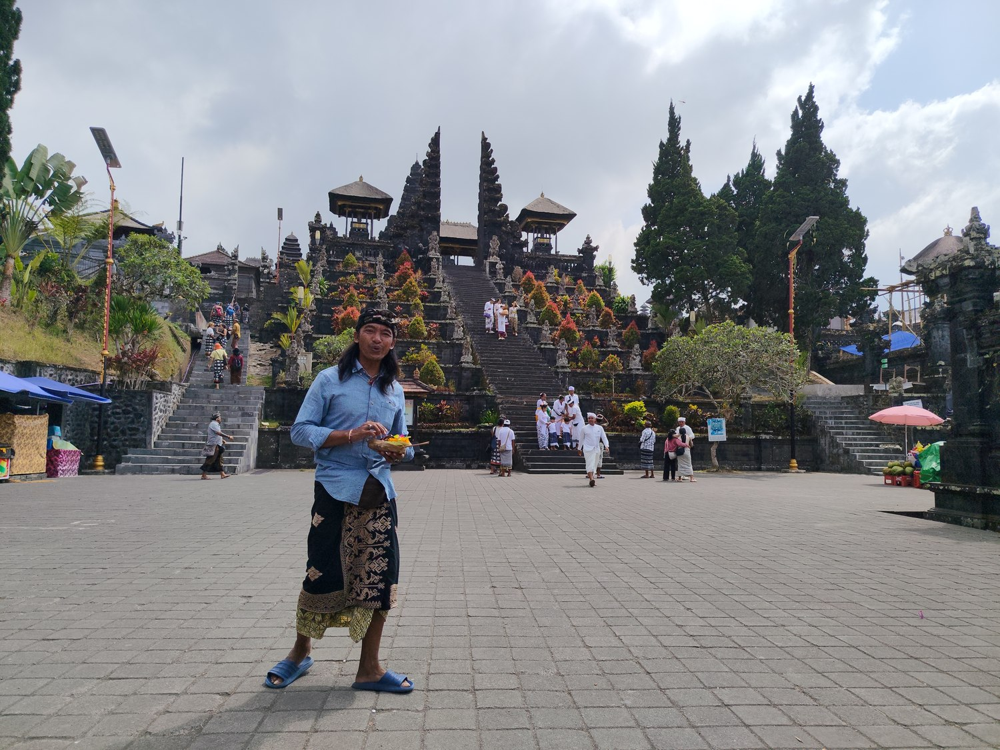
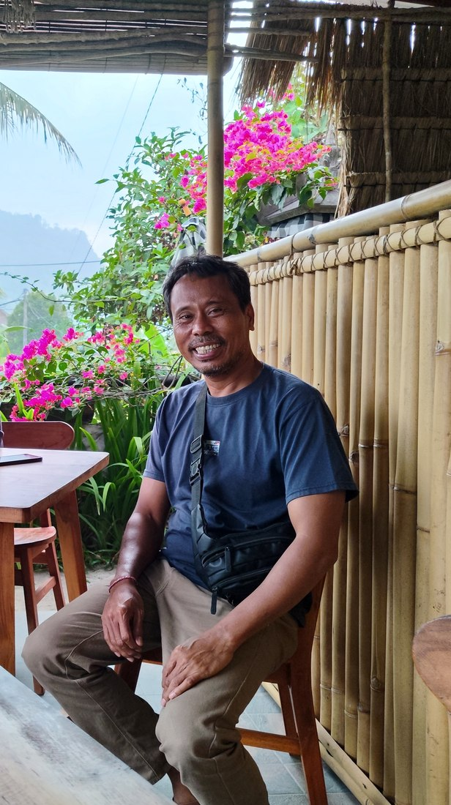

Foreverywhere · von Herzen
Meine Empfehlungen
Menschen, die meine Reise schöner gemacht haben
Unterwegs begegne ich Menschen, die mir mit so viel Herz ihre Welt zeigen. Hier sammle ich sie – ehrlich und gern weiterempfohlen, damit auch ihr bei ihnen in guten Händen seid. 💛

🇮🇩 Bali · Guide
Nyoman Sura
Lokaler Guide am Pura Besakih & für Touren über die ganze Insel
Am Vollmondtag hat Nyoman mich durch Balis Muttertempel Pura Besakih geführt und das Segnungsritual mit Blumen und heiligem Wasser mit mir vollzogen – geduldig, warmherzig und ohne jede Hast. Er zeigt Reisenden Bali „von innen": die Tempel, die Zeremonien, die stillen Orte abseits der großen Wege. Wer die Insel der Götter mit einem echten Einheimischen erleben möchte, ist bei ihm genau richtig. 🙏

🇮🇩 Bali · Fahrer & Guide
Komang Caniada
Fahrer & Guide für Touren über ganz Bali
Mit Komang war ich einen ganzen Tag unterwegs – zum Mount Batur, in die heißen Quellen und zum heiligen Wasser-Tempel Pura Tirta Empul. Herzlich, hilfsbereit und zuverlässig: Er wartet geduldig, erklärt unterwegs alles und bringt einen sicher über die kurvigen Inselstraßen. Wer Bali entspannt und mit einem freundlichen Einheimischen am Steuer entdecken möchte, ist bei ihm bestens aufgehoben. 🚗
Fortsetzung folgt – die Reise bringt bestimmt noch mehr liebe Menschen. 🌴